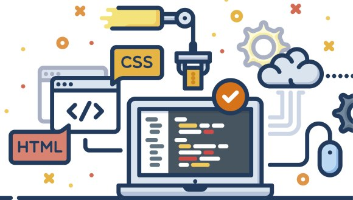

IT sohasiga xush kelibsiz!
IT - bu Information Technology (axborot texnologiyalari) degan so'zning qisqartmasi. Oddiy qilib aytganda, IT kompyuterlar, internet, dasturlar va boshqa texnologiyalar orqali malumotlarni yaratish, saqlash, uzatish va boshqarish bilan shug'ullanadi.
Axborot texnologiyalari (IT) zamonaviy dunyoda muhim rol o'ynaydi. Ular biznes jarayonlarini avtomatlashtirish, ma'lumotlarni boshqarish va global aloqalarni rivojlantirishga yordam beradi. IT sohasida ishlash uchun dasturlash, tarmoq boshqaruvi, kiberxavfsizlik va ma'lumotlar bazalari kabi ko'nikmalar talab etiladi. Agar siz IT sohasida muvaffaqiyat qozonmoqchi bo'lsangiz, doimiy ravishda yangi texnologiyalarni o'rganishga tayyor bo'lishingiz kerak. Bu soha tez rivojlanmoqda va yangi imkoniyatlar har doim mavjud.

IT sohasining kelajagi
IT sohasining kelajagi juda keng va kuchli bo'lib qoladi. Sun'iy intellekt rivojlanishi tufayli ko'plab ishlar avtomatlashtiriladi, lekin shu bilan birga yangi mutaxassisliklar ham paydo bo'ladi, masalan AI modellarini yaratish, ma'lumotlarni tahlil qilish va xavfsizlikni ta'minlash. Dunyo tobora raqamlashtirilayotgani uchun kiberxavfsizlikka bo'lgan talab ham kuchayadi. Mobil ilovalar, veb saytlar va IoT qurilmalar kengayib boradi, shu sababli dasturlash uzoq vaqt davomida kerakli kasb bo'lib qoladi. Kompaniyalar bulut xizmatlariga o'tayotgani uchun cloud texnologiyalari ham muhim ahamiyatga ega bo'ladi. Umuman olganda, IT mutaxassislariga ehtiyoj kamaymaydi, chunki texnologiyalarni yaratish, boshqarish va himoyalash uchun odamlar zarur. Kelajakda ITda muvaffaqiyatli bo'lish uchun texnik bilimlar, kreativ fikrlash va yangi texnologiyalarga moslasha olish muhim hisoblanadi.
IT sohasida qanday yo'nalishlar mavjud?
IT sohasida ko'plab yo'nalishlar mavjud, ularning ba'zilari quyidagilar:
- Dasturlash: Veb dasturlash, mobil ilovalar yaratish, o'yin dasturlash va tizim dasturlash kabi yo'nalishlar mavjud.
- Tarmoq boshqaruvi: Kompyuter tarmoqlarini yaratish, boshqarish va xavfsizligini ta'minlash bilan shug'ullanadi.
- Kiberxavfsizlik: Ma'lumotlarni himoya qilish, xavfsizlik tizimlarini yaratish va kiberhujumlarga qarshi kurashish.
- Ma'lumotlar bazalari: Ma'lumotlarni saqlash, boshqarish va tahlil qilish uchun zarur bo'lgan texnologiyalar.
- Bulut hisoblash: Bulut xizmatlarini yaratish va boshqarish, masalan AWS, Azure yoki Google Cloud Platform.
- Sun'iy intellekt va mashina o'rganishi: AI modellarini yaratish, ma'lumotlarni tahlil qilish va avtomatlashtirilgan tizimlar ishlab chiqish.
Har bir yo'nalish o'ziga xos ko'nikmalar va bilimlarni talab qiladi, shuning uchun qaysi yo'nalishda ishlashni xohlayotganingizni aniqlash muhimdir.
IT sohasida muvaffaqiyat qozonish uchun maslahatlar
IT sohasida muvaffaqiyat qozonish uchun quyidagi maslahatlarni hisobga olish foydali bo'ladi:
- Doimiy o'rganish: Texnologiyalar tez rivojlanadi, shuning uchun yangi bilimlar va ko'nikmalarni doimiy ravishda o'rganing.
- Amaliy tajriba: Loyihalarda ishtirok eting, stajirovkalar o'ting va real dunyo muammolarini hal qilishga harakat qiling.
- Tarmoq yaratish: IT sohasidagi mutaxassislar bilan aloqalar o'rnating, konferensiyalarda ishtirok eting va professional jamoalarga qo'shiling.
- Portfolio yaratish: O'z ishlaringizni namoyish etish uchun portfolio yarating, bu ish beruvchilar uchun muhim ko'rsatkich bo'lishi mumkin.
- Soft skills rivojlantirish: Muloqot qilish, jamoada ishlash va muammolarni hal qilish kabi yumshoq ko'nikmalarni rivojlantiring.
Ushbu maslahatlarni amalga oshirish orqali IT sohasida muvaffaqiyat qozonishingiz mumkin.
IT sohasida ishlashning afzalliklari
IT sohasida ishlashning bir qancha afzalliklari mavjud:
- Yuqori maosh: IT mutaxassislari odatda yuqori maosh oladi, chunki ularning ko'nikmalari va bilimlari talabga javob beradi.
- O'sish imkoniyatlari: IT sohasida ko'plab yo'nalishlar mavjud bo'lib, siz o'z qiziqishlaringizga mos ravishda rivojlanishingiz mumkin.
- Masofadan ishlash imkoniyati: Ko'plab IT ishlar masofadan bajarilishi mumkin, bu esa ish va shaxsiy hayot muvozanatini yaxshilaydi.
- Ijodiy muhit: IT sohasida yangi g'oyalar va yechimlar yaratish imkoniyati mavjud, bu esa ijodiy fikrlashni rag'batlantiradi.
- Global imkoniyatlar: IT mutaxassislari butun dunyo bo'ylab ish topish imkoniyatiga ega, chunki texnologiyalar global miqyosda qo'llaniladi.
Ushbu afzalliklar IT sohasini jozibador qiladi va ko'plab odamlarni ushbu sohada ishlashga undaydi.
IT sohasidagi trendlar
IT sohasida bir qancha muhim trendlar mavjud:
- Sun'iy intellekt (AI) va mashina o'rganishi: AI texnologiyalari kundalik hayotimizda tobora ko'proq qo'llanilmoqda, bu esa yangi imkoniyatlar yaratadi.
- Bulut hisoblash: Kompaniyalar bulut xizmatlariga o'tmoqda, bu esa ma'lumotlarni saqlash va boshqarishni osonlashtiradi.
- Kiberxavfsizlik: Kiberhujumlar soni oshgani sababli, kiberxavfsizlikka bo'lgan talab ham ortmoqda.
- Internet of Things (IoT): IoT qurilmalari kundalik hayotimizda tobora ko'proq qo'llanilmoqda, bu esa yangi imkoniyatlar va xavfsizlik muammolarini keltirib chiqaradi.
- 5G texnologiyasi: 5G tarmoqlari tezroq va ishonchliroq internet ulanishini ta'minlaydi, bu esa yangi ilovalar va xizmatlarni rivojlantirishga yordam beradi.
Ushbu trendlar IT sohasining kelajagini shakllantiradi va mutaxassislar uchun yangi imkoniyatlar yaratadi.
IT sohasida muvaffaqiyat qozonish uchun kerakli ko'nikmalar
IT sohasida muvaffaqiyat qozonish uchun quyidagi ko'nikmalar muhim hisoblanadi:
- Dasturlash tillari: Python, Java, JavaScript, C++ kabi dasturlash tillarini bilish.
- Tarmoq tushunchalari: TCP/IP, DNS, HTTP kabi tarmoq protokollarini tushunish.
- Kiberxavfsizlik asoslari: Xavfsizlik siyosatlari, xavfsizlik vositalari va xavfsizlik testlarini bilish.
- Ma'lumotlar bazalari: SQL va NoSQL ma'lumotlar bazalarini boshqarish ko'nikmalari.
- Bulut texnologiyalari: AWS, Azure yoki Google Cloud Platform kabi bulut xizmatlarini bilish.
- Muammolarni hal qilish: Texnik muammolarni aniqlash va samarali yechimlar topish qobiliyati.
Ushbu ko'nikmalarni rivojlantirish orqali IT sohasida muvaffaqiyat qozonishingiz mumkin.
IT sohasida ishlash uchun qanday ta'lim olish kerak?
IT sohasida ishlash uchun quyidagi ta'lim yo'llarini ko'rib chiqishingiz mumkin:
- Oliy ta'lim: Kompyuter fanlari, axborot texnologiyalari yoki dasturlash bo'yicha bakalavr yoki magistr darajasini olish.
- Onlayn kurslar: Coursera, Udemy, edX kabi platformalarda IT bo'yicha kurslarni o'tish.
- Stajirovkalar: IT kompaniyalarida stajirovkada ishtirok etish orqali amaliy tajriba olish.
- Self-study: Kitoblar, bloglar va video darsliklar orqali mustaqil ravishda o'rganish.
- Professional sertifikatlar: CompTIA, Cisco, Microsoft kabi tashkilotlardan sertifikatlar olish.
Ushbu ta'lim yo'llarini birlashtirish orqali IT sohasida muvaffaqiyat qozonishingiz mumkin.